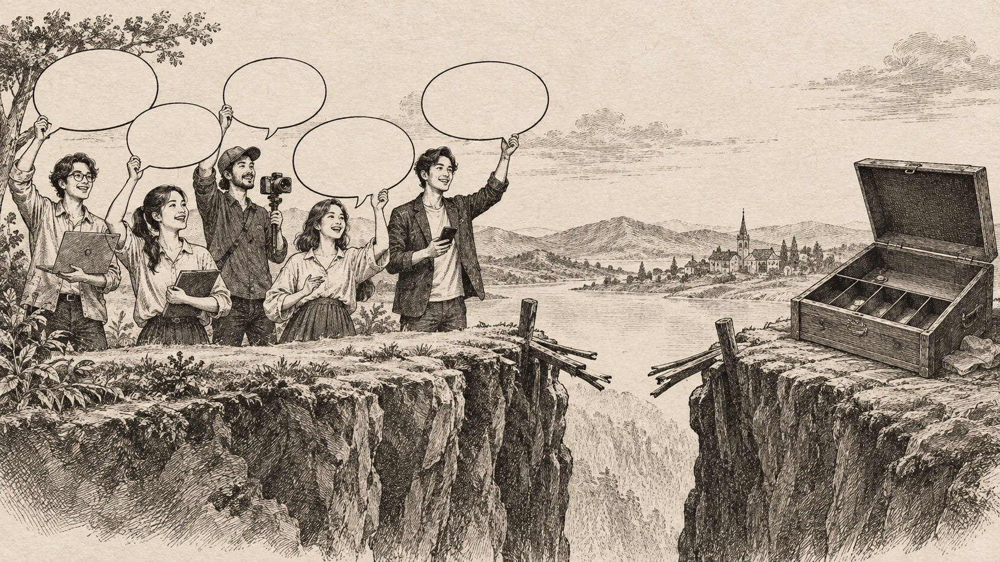

お客さんの「欲しいです！」を、売上予定に入れないでください。

どーも！とーるです！
商品を作る前に、周りの人へ聞くことってありますよね。
「こういう講座があったら、欲しいですか？」
すると、「欲しいです！」
「絶対受けたいです！」
「それ、待ってました！」みたいな、うれしい言葉が返ってくる。
ここまで言われたら、ちょっと期待します。
いや、ちょっとどころではありません。
頭の中では、もう初月の売上が完成しています（笑）
10人に聞いて、8人が「欲しい」と言ってくれた。
価格が3万円なら、24万円。電卓まで叩いた。
あとは販売ページを作るだけ。
ところが、いざ募集を始めてみると。申込み、1件。
あとの7人は、どこへ行ったのでしょう。
たぶん、日本のどこかにはいます（笑）でも、申込みフォームにはいません。
「欲しいです」は、ウソだったのか
こうなると、「あの人たちは社交辞令だったのかな。」
「応援するふりをされただけなのかな。」と思いたくなるかもしれません。
でも、僕はそうとも限らないと思っています。
その場では、本当に欲しいと思っていた。
話を聞いて、魅力も感じていた。
応援したい気持ちもあった。
ただ、
ここを一緒にすると、販売前の手応えが、急に売上予測へ変わります。
まだ「いいですね」と言われただけなのに、経理だけが先に喜び始めます（笑）
言葉には、まだ痛みがない
「欲しいです」と答えるだけなら、お金は減りません。
予定も空けなくていい。
家族に相談しなくてもいい。
今やっていることを中断する必要もありません。
でも、実際に買うとなると話が変わります。価格を見る。時間を確認する。
ほかの商品と比べる。
本当に今の自分に必要なのかを考える。
カード番号を入力する。
ここで初めて、相手の中にあった「欲しい」が、現実とぶつかります。
言葉の段階では見えなかった、「今月は出費が多い。」
「勉強する時間がない。」
「似た教材をまだ見終わっていない。」
「欲しいけど、今じゃない。」が出てきます。
つまり、販売前に聞いた「欲しいです」は、商品への好意を測っているだけかもしれません。
人は、未来の自分を少し立派に見積もる
行動経済学や心理学では、人が「こうしたい」と考えていても、実際の行動が一致しないことがあります。一般に、意図と行動のギャップと呼ばれるものです。
たとえば、「来月から運動します。」
「この本、週末に読みます。」
「お気に入りに入れたので、あとで買います。」
どれも、その瞬間はウソではありません。
ただ、来月の自分、週末の自分、あとで見る自分に、少し期待しすぎています。
未来の自分なら、今の自分より時間がある。
未来の自分なら、ちゃんと決断できる。
未来の自分なら、積んである教材も全部終わっている。
未来の自分、なかなかのエリートです（笑）
「欲しいです」と言っている人も同じです。
商品を見た瞬間には、「これを使えば変われそう。」と思っている。
でも、実際に買う場面では、未来の理想より、目の前の負担が強くなります。
アンケートで売上を予測すると、ズレやすい
アンケートを取ることが悪いわけではありません。
むしろ、相手が何に困っているのか、どんな言葉に反応するのかを知るには役立ちます。
ただし、「この商品、欲しいですか？」という質問だけで需要を判断するのは危険です。
なぜなら、相手は商品の説明を聞いた直後だからです。
あなたとの関係もある。
応援したい気持ちもある。
目の前で「いらないです」とは言いづらいこともある。
しかも、まだお金も時間も差し出していません。
これで分かるのは、「説明を聞いたときの印象。」「テーマへの興味。」
「あなたへの好意。」です。
どれも大切です。
拍手が大きかったからといって、物販の列ができるとは限らない。
ライブ会場なら、なかなか切ない景色です（笑）
見たいのは、言葉より「小さな行動」
では、何を見ればいいのか。
僕は、相手が次の行動をしたかを見るほうがいいと思っています。
- 詳細ページを読んだ
- 価格を確認した
- 説明会へ申し込んだ
- 無料教材を受け取った
- メールを何通か読んだ
- 期限までに申込みフォームを開いた
- 実際に決済した
もちろん、無料教材を受け取った人が全員買うわけではありません。
説明会へ来た人が全員申し込むわけでもない。
ただ、「欲しいです」と言っただけの人よりは、一段進んでいます。
ここで大事なのは、いきなり全員を購入者として見ることではありません。
「興味を持った人。」「少し動いた人。」「比較している人。」
「買う準備ができた人。」「実際に買った人。」を分けて見ることです。
「欲しい人がいる」と「売れる」は別の確認
商品を作る前に確認したいことは、1つではありません。
テーマに興味がある人はいるか。
その悩みは、今すぐ解決したいものか。
その方法に、お金を払う理由があるか。
その価格で、ほかの選択肢より優先されるか。
買ったあと、実際に使えるか。
ここまで通って、ようやく商品としての需要が見えてきます。
だから、「10人に聞いたら、8人が欲しいと言ってくれました。」
は、良いスタートです。
でも、
スタート地点を、ゴールテープとして使うと、そりゃ途中でコケます（笑）
商品を作る前に、小さく売ってみる
本当に需要を確かめたいなら、完成品を作る前に、小さく売ってみる方法があります。
先行募集。モニター募集。少人数のテスト開催。簡易版の商品。
最初から100点の商品を作るのではなく、「この内容を、この価格で、この日程なら買う人がいるか。」を確認する。
ここで申込みが入れば、「欲しい」が行動に変わった証拠になります。
入らなければ、商品が全部ダメとは限りません。
テーマはいいけど、価格が合っていないのかもしれない。
内容はいいけど、今すぐ必要ではないのかもしれない。
欲しい人ではなく、応援してくれる人に聞いていたのかもしれない。
販売して初めて見えるズレがあります。
見込客は、ひとまとめにしない
以前のコラムで、見込客と顧客では、発信者に求めるものが違うという話を書きました。
新しく知った人は、「私にもできそう。」
「この人なら分かってくれそう。」を求めるかもしれない。
すでに買った顧客は、「自分にはない判断を示してほしい。」と思っているかもしれない。
今回の話も同じです。
一言で「見込客」と呼んでいても、ちょっと気になった人。
無料なら見たい人。いつか買いたい人。今なら買いたい人。
すでに比較を始めている人。
では、必要な情報も、次に取る行動も違います。
この違いを無視して、全員へいきなりアプリ登録や商品購入を求めると、まだ玄関にいる人へ「では寝室はこちらです」と案内するようなものです（笑）距離感が、まあまあ怖い。
関連する考え方は、こちらのコラムでも詳しく書いています。
売上予定に入れていいのは、売れたあと
少し厳しく聞こえるかもしれませんが、「欲しいです。」「検討します。」
「たぶん申し込みます。」
は、売上予定ではありません。
相手を信用していないからではありません。
人は、気持ちが変わるからです。状況も変わる。優先順位も変わる。そして本人でさえ、未来の自分が何をするかを正確には分かりません。
だから、売上予定に入れるのは、申込みが入ったとき。
それまでは、「反応があった。」
「興味を持つ人がいた。」
「次の検証へ進める。」くらいに置いておく。
このくらいの距離感のほうが、売れなかったときに相手を責めずに済みます。
自分の商品を全否定せずにも済みます。
僕は「期待」より「行動」を見るほうが、相手にやさしいと思う
「欲しいと言ったのに、買ってくれなかった。」と思うと、相手が約束を破ったように見えます。
でも、相手は購入を約束したわけではありません。
その瞬間の気持ちを伝えただけです。
僕はそう考えています。
相手の言葉を疑うのではなく、言葉がどの段階のものなのかを見る。そして、いきなり買わせようとせず、小さな行動を用意する。
興味がある人には、もう少し詳しい記事。
悩みを自覚した人には、診断や無料教材。
自分で解決しにくいと分かった人には、商品や相談。
こうやって段階をつなげれば、「欲しいと言ったのに買わない人。」ではなく、「まだ買う段階ではなかった人。」として見られるようになります。
商品の反応が良かったときほど、電卓を叩く前に。
その「欲しい」は、どこまでの欲しいなのか。
言葉の大きさではなく、次に起きた小さな行動を見てみてもいいかもしれません。
✦
P.S.
「欲しい」という反応が集まったら、次は売上を予測するより、相手が一歩だけ進める導線を用意する。
記事をもう一本読む。診断を受ける。無料教材を受け取る。
価格と内容を見る。
この小さな行動が重なると、「興味」と「購入」の間にあるズレが少しずつ見えるようになります。
とーる｜猫好きの行動経済アナリスト